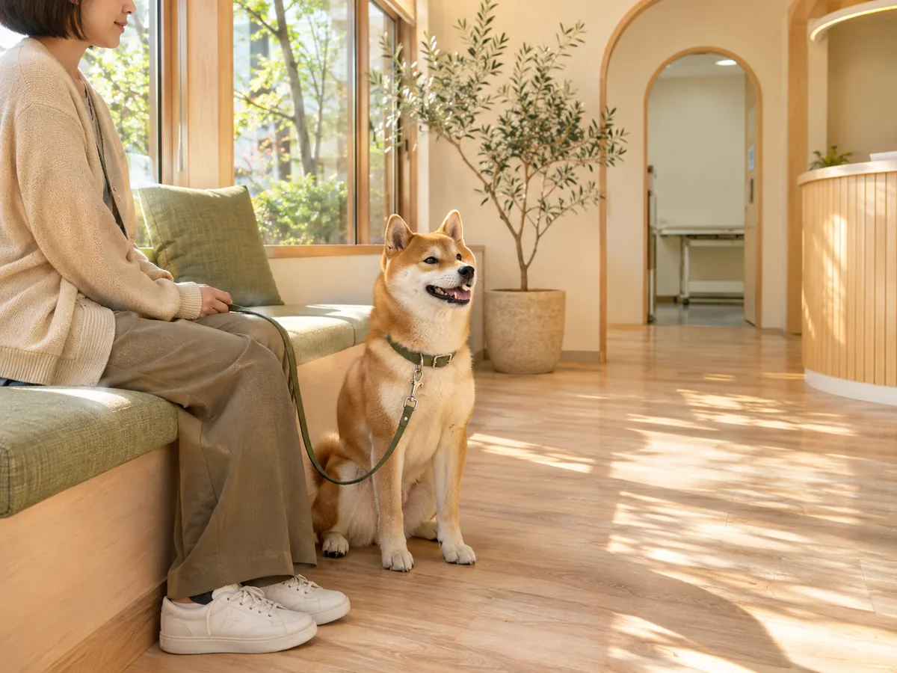

ワンちゃん・ネコちゃんがそれぞれのペースで安心して受診できるよう、入口から待合・診察室まで分けています。下の切替ボタンでそれぞれの配慮をご覧ください。

他のワンちゃんが苦手な子でも距離を保てるよう、ベンチ間隔を広めに確保。お車での待機・スマホ呼び出しにも対応しています。
駐車場8台完備。予防接種から7歳以上のシニア半日ドック、持病のある子の薬浴トリミングまで地域のかかりつけとして伴走します。